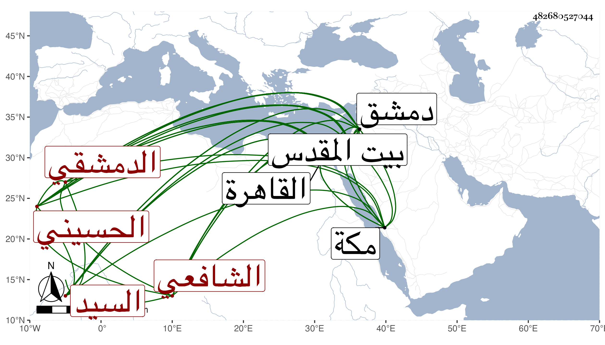

0902Sakhawi.DawLamic.ITO20230111-ara1.EIS1600.482680527044
Biography ID: 482680527044
624
حمزة بن أحمد بن علي بن محمد بن علي السيد عز الدين بن الشهاب أبي العباس بن أبي هاشم بن الحافظ الشمس أبي المحاسن الحسيني الدمشقي الشافعي والد الكمال محمد الآتي والماضي أبوه . ولد في شوال سنة ثمان عشرة وثمانمائة بدمشق ونشأ بها فحفظ القرآن والتنبيه وتصحيحه للاسنوي والمنهاج الأصلي وألفيتي الحديث والنحو والشاطبية وعرض على العلاء البخاري والتقي بن قاضي شهبة وعنه وعن ولده البدر أخذ الفقه ، وكذا عن المحيوي القبابي المصري واليسير عن البدر بن زهرة ، وتلا بالسبع جمعا إلى غافر على الشهاب بن قيسون وبجميع القرآن افرادا وجمعا على ابن النجار وابن الصلف ، وأخذ النحو ببلده عن العلاء القابوني وبمكة عن القاضي عبد القادر في آخرين والصرف والمنطق عن يوسف الرومي وأصول الفقه عن الشرواني ، وسمع الحديث على ابن ناصر الدين والشهاب بن ناظر الصاحبة وغيرهما من شيوخ بلده ، وارتحل إلى القاهرة غير مرة فأخذ بها عن شيخنا المشتبه وغيره ووصفه في أصل تعجيل المنفعة بالمحدث الفاضل بل قرض له بعض تصانيفه وبالغ ، وكذا أخذ بالقاهرة عن طائفة ورافقني في السماع على بعض الشيوخ وسمعت أيضا بقراءته ولقيته بدمشق فأراني ذيلا كتبه على مشتبه النسبة لشيخنا استمد فيه من كتاب شيخه ابن ناصر الدين في ذلك وكتابا سماه بقايا الخبايا استدرك فيه على خبايا الزوايا للزركشي وهو الذي قرضه له شيخنا وكتابا حافلا في الأوائل وأظنه وقع له كتاب شيخنا في ذلك ومصنفا سماه الايضاح على تحرير التنبيه للنووي وطبقات النحاة واللغويين في مجلد والذيل على طبقات شيخه التقي بن قاضي شهبة في نحو ثلاث كراريس وفضائل بيت المقدس في مجلد لطيف والمنتهى في وفيات أولى النهي جامع لأهل المذاهب في غاية الاختصار بحيث جاء في نحو عشرة كراريس ، وحج مرارا وجاور في بعضها وناب في القضاء ودرس بالعمادية وتصدر بجامع بني أمية وصاهر الولوي بن قاضي عجلون على ابنته ، وكان فاضلا مفننا متواضعا لطيف الذات والعشرة كثير التودد والعقل وبيننا مودة ، ولما كنت بمكة راسل بالسلام وطيب الكلام . مات ببيت المقدس ، وكان توجه إليه بعد الطاعون في آخر سنة ثلاث وسبعين فمرض بها ومات في ربيع الآخر سنة أربع وسبعين ، ودفن بماملا بين الشيخ بولاد والشهاب بن الهائم ، وكانت جنازته حافلة وصلى عليه بدمشق صلاة الغائب رحمه الله وإيانا .
